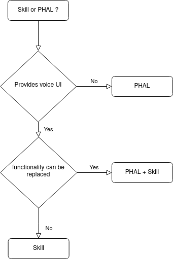

PHAL
PHAL is our Platform/Hardware Abstraction Layer, it completely replaces the concept of hardcoded "enclosure" from mycroft-core
Any number of plugins providing functionality can be loaded and validated at runtime, plugins can be system integrations to handle things like reboot and shutdown, or hardware drivers such as mycroft mark2 plugin
PHAL plugins can perform actions such as hardware detection before loading, eg, the mark2 plugin will not load if it does not detect the sj201 hat. This makes plugins safe to install and bundle by default in our base images
Plugins
Platform/Hardware specific integrations are loaded by PHAL, these plugins can handle all sorts of system activities
| Plugin | Description |
|---|---|
| ovos-PHAL-plugin-alsa | volume control |
| ovos-PHAL-plugin-system | reboot / shutdown / factory reset |
| ovos-PHAL-plugin-mk1 | mycroft mark1 integration |
| ovos-PHAL-plugin-mk2 | mycroft mark2 integration |
| ovos-PHAL-plugin-respeaker-2mic | respeaker 2mic hat integration |
| ovos-PHAL-plugin-respeaker-4mic | respeaker 4mic hat integration |
| ovos-PHAL-plugin-wifi-setup | wifi setup (central plugin) |
| ovos-PHAL-plugin-gui-network-client | wifi setup (GUI interface) |
| ovos-PHAL-plugin-balena-wifi | wifi setup (hotspot) |
| ovos-PHAL-plugin-network-manager | wifi setup (network manager) |
| ovos-PHAL-plugin-brightness-control-rpi | brightness control |
| ovos-PHAL-plugin-ipgeo | automatic geolocation (IP address) |
| ovos-PHAL-plugin-gpsd | automatic geolocation (GPS) |
| ovos-PHAL-plugin-dashboard | dashboard control (ovos-shell) |
| ovos-PHAL-plugin-notification-widgets | system notifications (ovos-shell) |
| ovos-PHAL-plugin-color-scheme-manager | GUI color schemes (ovos-shell) |
| ovos-PHAL-plugin-configuration-provider | UI to edit mycroft.conf (ovos-shell) |
| ovos-PHAL-plugin-analog-media-devices | video/audio capture devices (OCP) |
Developers
In mycroft-core the equivalent to PHAL plugins would usually be shipped as skills or hardcoded
in OVOS sometimes it may be unclear if we should develop a skill or plugin, there isn't a one size fits all answer, in some circumstances it may make sense to create both a plugin and a companion skill

Template
PHAL plugins do not follow a strict template, they are usually event listeners that perform certain actions and integrate with other components
from mycroft_bus_client import Message
from ovos_plugin_manager.phal import PHALPlugin
class MyPHALPluginValidator:
@staticmethod
def validate(config=None):
""" this method is called before loading the plugin.
If it returns False the plugin is not loaded.
This allows a plugin to run platform checks"""
return True
class MyPHALPlugin(PHALPlugin):
validator = MyPHALPluginValidator
def __init__(self, bus=None, config=None):
super().__init__(bus=bus, name="ovos-PHAL-plugin-NAME", config=config)
# register events for plugin
self.bus.on("my.event", self.handle_event)
def handle_event(self, message):
# TODO plugin stuff
self.bus.emit(Message("my.event.response"))
def shutdown(self):
# cleanly remove any event listeners and perform shutdown actions
self.bus.remove("my.event", self.handle_event)
super().shutdown()
You can find plugin packaging documentation here
Admin PHAL
AdminPHAL performs the exact same function as PHAL, but plugins it loads will have root privileges.
This service is intended for handling any OS-level interactions requiring escalation of privileges. Be very careful when installing Admin plugins and scrutinize them closely
NOTE: Because this service runs as root, plugins it loads are responsible for not writing configuration changes which would result in breaking config file permissions.
Service
to use AdminPHAL create a launcher /usr/libexec/mycroft-systemd-admin-phal
import sdnotify
from ovos_PHAL.admin import main
n = sdnotify.SystemdNotifier()
def notify_ready():
n.notify('READY=1')
print('Startup of Admin service complete')
def notify_stopping():
n.notify('STOPPING=1')
print('Stopping Admin service')
main(ready_hook=notify_ready, stopping_hook=notify_stopping)
and system service /usr/lib/systemd/user/mycroft-admin-phal.service
[Unit]
Description=Admin PHAL
PartOf=mycroft.service
After=mycroft-messagebus.service
[Service]
Type=notify
TimeoutStopSec=30
Restart=always
User=root
ExecStart=/usr/libexec/mycroft-systemd-admin-phal
[Install]
WantedBy=mycroft.service
Plugins
AdminPlugins are just like regular PHAL plugins that run with root privileges
A plugin needs to identify itself as an admin plugin via it's entry point, PHAL will not load Admin plugins and AdminPHAL will not load regular plugins
Admin plugins will only load if their configuration contains "enabled": true. All admin plugins need to be explicitly enabled
You can find plugin packaging documentation here